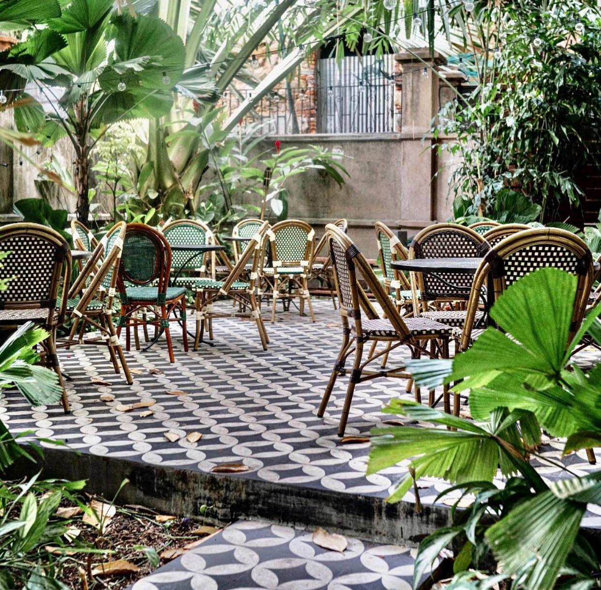

Lugar Del Momento: Mahalo



Mahalo es un rstaurante azotea ubicado en el centro del Casco Antiguo de la ciudad de Panamá, ofrece desde hamburguesas, hasta elaborabos platillos de pasta.
Es el lugar ideal en todo momento para ir a disfrutar con tus amigos y familiares un rico jugo, cerveza, postre o lo que quieras, mientras disfrutas de la vista histórica.